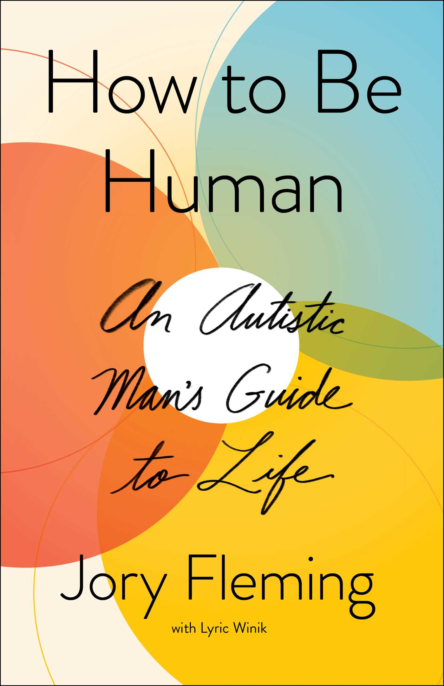

How to Be Human
⭐️⭐️⭐️
Format: audio (5 hours 37 minutes)
An insightful book about and by a man (Jory Fleming) with autism. Given the unique and varying nature of autism, this is an insightful book into his life - how he lives, thinks, and operates. It is by no mean descriptive of all those with autism, nor prescriptive in how to interact with those who do. It represents a perpsective, and I'd love to give him a 5/5 for providing that perspective.
As a parent of a child with autistic characteristics, I could see some similarities, and some huge differences - again highlighting the unique nature of autism. I don't think I'd recommend the book the a really wide audience, but if you're curious about one version of autism, Fleming's insight, and his co-auther (Lyric Winik) do a good job of shining light on some areas of the subject.
- Previously: Things as They Really Are
- Next: Positive Intelligence